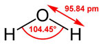
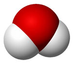

Viccek
Az oldalon a következő viccek vannak bemutatva:
- Pistike, és a legnagyobb állat
- A különös tehén
- Balszerencsés macska
- Legyek
- Bulldog
Pistike, és a növekvő hal
A tanító néni kérdi az iskolában:
- Tanár
-
-Pistike, mondd meg nekem, melyik élőlény növekszik a leggyorsabban?
- Pistike
- -A hal.
- Tanár
- -Hát ezt meg honnan veszed?
- Pistike
-
-A papám a múlt vasárnap fogott egy halat, és azóta ahányszor mesél
róla, a hal egyre nagyobb.
A különös tehén
- 1.gazda
- -Kendnek meg milyen különleges tehene van, szomszéd?
- 2.gazda
- -Hát má' miért volna az különleges?
- 1.gazda
- -Hogy még pipálni is tud!
- 2.gazda
- -Ugyan má', hogy tudna?
- 1.gazda
- -Nem azért füstöl az istállója?
A víz
- Képlet: H2O
- Forráspont: 100 oC
- Olvadáspont: 0 oC
- Ábrák:


További információk elérhetők a
Wikipédia vonatkozó oldalán
A központi oldalak térképe
Egyetemi szervezetek
- Rektori köszöntő
- Az egyetem vezetői
- Szenátus tagjai
- Gazdasági Tanács tagjai
- Tanszékvezetők
- Rektori Titkárság
-
Rektori Hivatal
- Rektori Hivatal szolgáltatásai
- Gazdasági és Műszaki Igazgatóság
- Informatikai Szolgáltató Központ
-
Nemzetközi Iroda
- Hírek, események
- Munkatársak
- Karrier Iroda
- Központi Tanulmányi és Informatikai Iroda
-
Campus-ok
- Budai Campus
-
Közgáz Campus
- Közgáz rendezvénynaptár
- Rendezvényszolgálati csoport
- Közigazgatástudományi Campus
- Innovációs Központ Kht.
- Tudásközpont